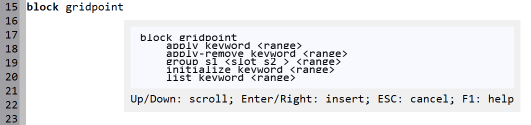
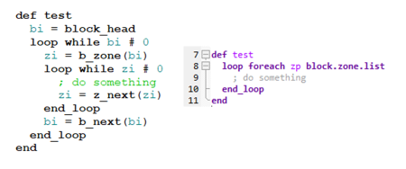
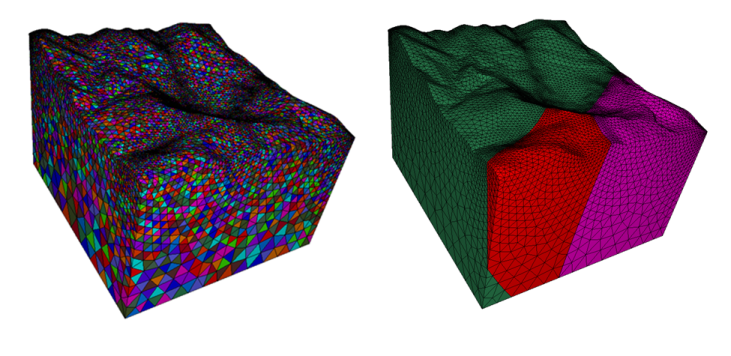
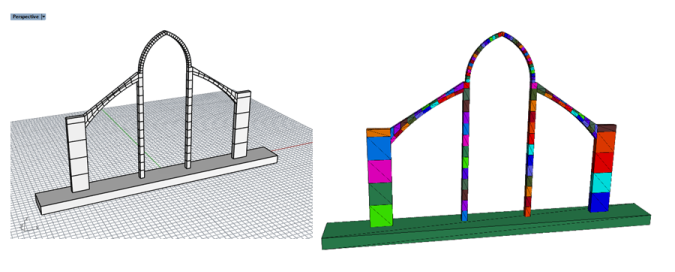
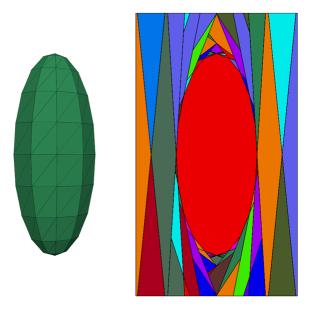
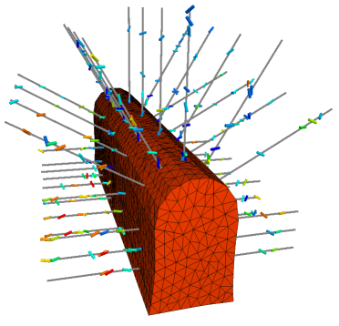
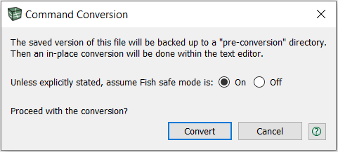
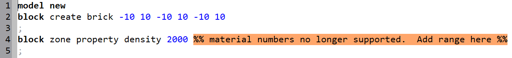

面向 3DEC 5.2 用户的 3DEC 7
3DEC 7 相对于 3DEC 5.2 及更早版本是一次重大变革。除了大量改进和新功能（7 版新增功能（New in Version 7））之外，3DEC 7 还采用了全新的命令与 FISH 语法、绘图系统和文档系统。
命令与 FISH 语法
命令与 FISH 语法的变更是自 3DEC 于 1988 年首次发布以来对命令系统的首次全面修订。新方案解决了过去 30 年间积累的诸多不一致之处和晦涩语法。在 7 版中，所有命令与 FISH 函数都遵循“名词-动词-选项-修饰词-范围”的模式。例如 BLOCK APPLY VELOCITY RANGE POSITION-X 0 10。与 5.2 版一样，无需输入完整单词。新系统具有以下优点：
- 每条命令作用的对象（块体、面、网格点等）都清晰明确。
- 命令与 FISH 尽可能与 FLAC3D 7 和 UDEC 7 相似（许多情况下完全相同），以便用户在程序之间切换。
- 新系统支持 FLAC3D、PFC 和 3DEC 之间的耦合。FLAC3D 结构单元的使用已内置于 3DEC 7 中
为便于有经验的用户开始使用 7 版，提供了以下几种工具：
- 从 3DEC 自动转换文件（5.2 及更旧数据文件的转换（Conversion of 5.2 and older Data Files））
- 将 5.2 版命令与 FISH 映射到 7.0 版命令与 FISH 的文档（3DEC 5.2 到 7.0 命令映射（3DEC 5.2 to 7.0 Command Mapping））
- 上下文帮助。当光标位于某条命令上时按 F1，可获取该命令的完整帮助条目
- 智能命令补全（行内帮助）。输入命令时使用
Ctrl-Space可查看后续可能关键字的列表。

材料
在 3DEC 5.2（及更早版本）中，可以将材料属性赋予材料编号，然后为网格单元和节理指定材料编号。现在不再允许这样做。材料属性现在直接赋给网格单元和节理（设置块体网格单元属性（block zone property） 和 设置块体接触属性（block contact property））。此外，与 5.2 版不同，网格单元没有默认本构模型。必须先指定网格单元本构模型，再赋属性（指定块体网格单元本构模型（block zone cmodel assign））。接触仍与 5.2 一样默认为莫尔-库仑材料。要指定不同的本构模型，请使用 cmd:\(block.contact.jmodel.assign\)。
节理材料属性同样没有默认值。若在大应变模式下运行（可能形成新接触），则必须设置这些默认值。见 block contact material-table。
大应变
在 5.2 版中，大应变分析是默认设置。在 7 版中，用户必须在循环计算前用 设置大变形模式命令（model large-strain） 命令指定采用大应变还是小应变。
FISH
在 3DEC 5.2 中，遍历通常通过链表实现。这种方式繁琐且易混淆，尤其是对网格点或网格单元，需要先遍历块体，再对每个块体遍历其每个网格点或网格单元。
新的 FISH 允许使用 FOREACH 遍历各个项。例如：
fish define myfunction
loop foreach zone block.zone.list
; 执行某项操作
end_loop
end
过去需要八行 FISH 的代码现在只需两行。
另一个区别是，在 7 版中，FISH 变量在使用前必须先赋值，或声明为 local 或 global。这样做是为了避免出现以下问题：方程中的变量名拼写错误，从而形成一个新的、取值为 0 的变量。
7.0 版新增功能
命令与脚本
- 命令与 FISH 的语法已全面更新，使其更直观，并与其他 Itasca 程序更一致。
- 新的转换工具（见下文5.2 及更旧数据文件的转换（Conversion of 5.2 and older Data Files））可将旧语法的命令和 FISH 转换为新语法。
- HTML 帮助系统可以显示在 3DEC 的窗口中，也可以显示在单独的浏览器中。
- 输入过程中可使用
CTRL-space显示可能的命令关键字。 - 计算过程中显示全局 FISH 符号。

- 新增的变量类型包括：布尔型、对称张量（如应力和应变）、矩阵（内置求逆、相乘等函数）、映射（或关联数组）以及结构体。
- FISH 的
foreach构造现在可用于 3DEC 对象。这大大简化了 3DEC 的 FISH。

图 3：在 3DEC 5.2（左）和 3DEC 7（右）中遍历模型中所有网格单元
- 现在所有对象（包括结构单元）都提供 FISH 函数。
- 现已提供多线程 FISH。对一组对象（如网格单元）的遍历可以分配到多个处理器上，从而大大加快函数执行速度。
- 编辑器得到改进，具有更好的高亮显示、可见的行号以及代码折叠（可折叠和展开代码段）。
- Python 已完全集成。所有 FISH 函数也可作为 Python 方法使用。
绘图与用户界面
- 新的绘图范式允许先选择要绘制的对象，再选择配色方案或要绘制等值线的值。
- 现在可对所有量绘制等值线（如应力和应变）。
- 大多数绘图项都支持映射到其他坐标，也支持以放大的变形进行绘制。
模型构建
- 实现了一种新的块体和网格单元导入/导出文件格式。
- 导入时可将四面体块体转换为网格单元。具有相同组名的块体可以合并，从而在单个块体内形成多个网格单元。这比接合（join）的运行速度快 2-3 倍。


图 4：由 Griddle 导入块体创建的 3DEC 模型（左）与使用新的合并功能创建的模型（右）。
- 直接由封闭几何面（如 DXF）构建模型：
- 可以用四面体块体填充一个体积，或者
- 在单个封闭面内合并块体以形成网格单元。
- 可直接由 VRML 文件创建 3DEC 块体。


图 5：砌体块体的 Rhino 模型（左）与所得的 3DEC 模型（右）。
- 可用导入的几何体（如 DXF）切割块体。

图 6：导入的 DXF 几何体（左）与剖切后 3DEC 模型的断面（右）。
混合锚杆
为锚索添加杆体分段，使锚杆能够抵抗穿过节理的剪切和张开。

图 7：开挖隧道周围的锚索。杆体分段按剪力绘制等值线。
其他
- 所有对象（包括结构单元、流动面等）都实现了组和额外变量。
- 现在可使用可选的压缩保存文件。
- 保存文件将与未来版本兼容。
5.2 及更旧数据文件的转换
3DEC 提供将 5.2（或更早）版本的命令转换为 7.0 版等价命令的方法。这通过从 菜单中选择相应命令来实现。
在 编辑 窗格中打开 5.2（或更旧）数据文件后，选择 以显示“命令转换”对话框。


该对话框提供开启或关闭FISH 安全转换模式（FISH Safe conversion mode）进行转换的选项。
在执行转换之前，会在数据文件所在目录下名为 “pre-conversion” 的文件夹中生成该文件的备份副本。数据文件将在磁盘上被转换，然后重新载入文本编辑器。
错误
某些情况下转换工具无法将 5.2 版命令转换为 7.0 版。此时数据文件中该命令有问题的部分会被 “%%” 符号包围并以橙色高亮显示。在可行时会显示说明信息，同样以注释形式并高亮为橙色。这些命令需要用户修正才能完成转换。提示：将光标置于有问题命令所在行并按 F1，可直接访问该命令的程序文档。
例如：


| 这些内容对您有帮助吗？… | FLAC3D © 2019, Itasca | 原文更新于 2020 年 10 月 8 日 |